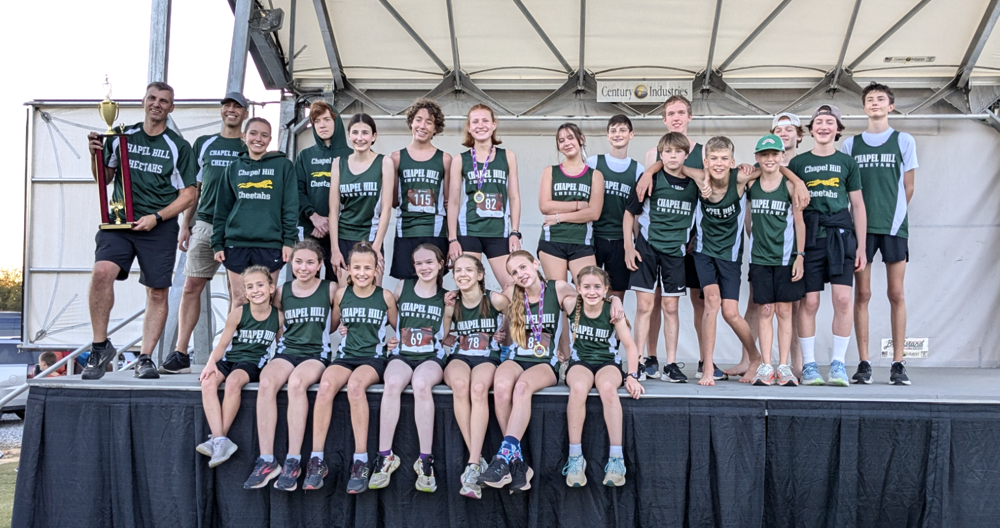

Chapel Hill Cheetahs
A NCHEAC running team for middle and high school home educated students in the Chapel Hill, NC and surrounding area.
Run With Us
The Chapel Hill Cheetahs are a North Carolina Home Education Athletic Conference (NCHEAC) running team, offering cross country and outdoor track programs for middle and high school. We offer quality coaching, fun with friends, great competition, from 10 year old just starting out to state champions and national qualifiers.
Cross Country
Cross Country season begins mid-July with meets starting in late-August, and goes though the state meet in middle of October.
Learn MoreOutdoor Track
NEW! The Outdoor season is now NCHEAC sanctioned and runs from Feb 16th through May 2nd.
Learn More